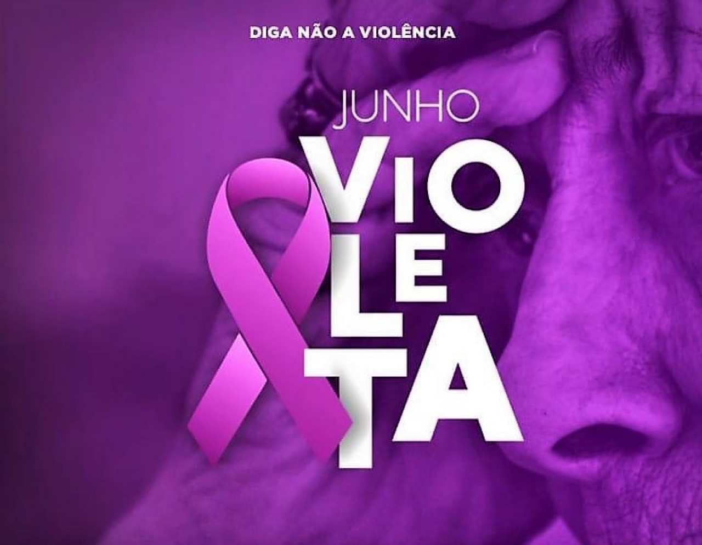
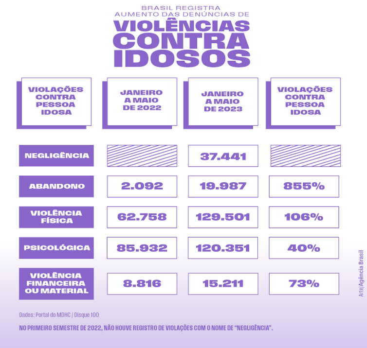
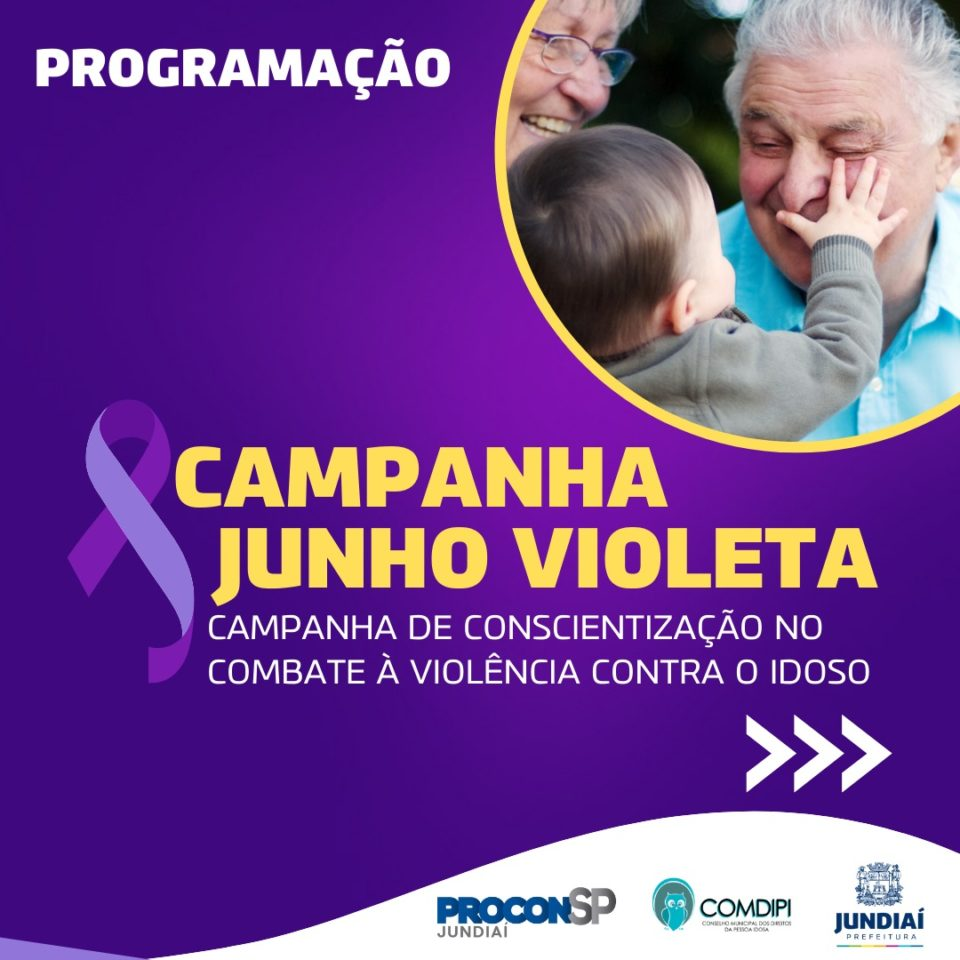
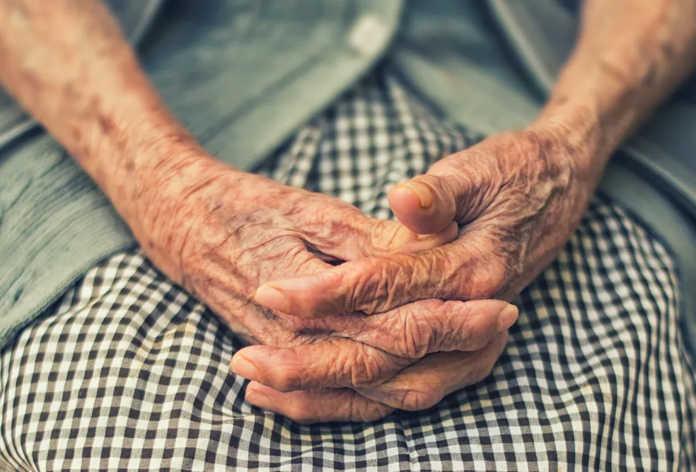

Sobre
O Dia Mundial de Conscientização da Violência contra a Pessoa Idosa, a ser observado em 15 de junho de cada ano, foi instituído em 2006 pela Organização das Nações Unidas e pela Rede Internacional de Prevenção à Violência à Pessoa Idosa.
Objetivo
O Dia Mundial de Conscientização da Violência Contra a Pessoa Idosa, celebrado em 15 de junho, alerta este ano para violações dos direitos dos idosos durante a pandemia do novo coronavírus. O principal objetivo do dia é criar uma consciência mundial, social e política, da existência da violência contra a pessoa idosa.
Dados
Abandono e negligência
Histórias de abandono e negligência fazem parte do caminho de violência a que estão submetidos os idosos. Segundo dados coletados pela Ouvidoria do Ministério dos Direitos Humanos e da Cidadania, nos primeiros cinco meses de 2023, pelo caminho de denúncias do Disque 100 (incluindo telefone, e-mail e redes sociais), o Brasil contabilizou 37.441 casos de negligência, 19.987 de abandono, 129.501 de violência física, 120.351 de violência psicológica e 15.211 de violência financeira. Houve um aumento em todos eles se comparados aos números do mesmo período do ano passado.
Noticias
Comissão marca debate sobre violência contra pessoa idosa
A Comissão de Defesa dos Direitos da Pessoa Idosa da Câmara dos Deputados debate nesta quarta-feira (14) questões relacionadas à violência contra a pessoa idosa. O debate foi solicitado pela deputada Flávia Morais (PDT-GO).A deputada lembra que, em 15 de junho, comemora-se o Dia Mundial de Conscientização da Violência contra a Pessoa Idosa. A data foi reconhecida pela Assembleia Geral das Nações Unidas em 2006, após solicitação da Rede Internacional de Prevenção ao Abuso de Idosos (Inpea). A data busca garantir a proteção dessa população vulnerável às variadas formas de agressões. No Brasil, dados do Disque 100 citados por Flávia Morais apontam que, em 2021, foram 37 mil notificações de violência contra os idosos, 29 mil delas sobre violência física. A maior parte das vítimas tem entre 70 e 74 anos, 68% são do sexo feminino e 47% dos agressores são os filhos.
Denúncias de violência contra idosos crescem 24% em Campinas, aponta governo federal
No primeiro semestre de 2023, cidade chegou a 460 chamados, que denunciavam mais de 2,6 mil violações diferentes. Na maioria dos casos, violações ocorrem dentro de casa e são cometidas por familiares próximos, como filhos e netos. Campinas (SP) registrou aumento no número de denúncias de violência contra idosos em 2023. De acordo com dados do Ministério dos Direitos Humanos e da Cidadania, o total de chamados recebidos pelo Disque 100 foi 24% maior no primeiro semestre, em comparação ao mesmo período do ano passado. Ao todo, foram 460 denúncias que, juntas, totalizaram mais de 2,6 mil violações (entenda os detalhes abaixo). Neste mês, quando é celebrado o Dia Mundial de Conscientização da Violência Contra a Pessoa Idosa.
Casos
Repórter Record Investigação mostra as várias faces da violência contra idosos no Brasil
Programa desta quinta (16) revela que O Disque 100, usado para denunciar violações de direitos humanos, registrou em 2022 quase 87 mil denúncias desse tipo no Brasil.
A função do cuidador é ajudar o idoso com higiene, alimentação, companhia e remédios. Priscilla até cumpre essas atribuições ao tomar conta do seu João. Mas é acusada pelo próprio idoso, com quem se casou sem ele saber, de maus tratos. Além de ser agredido a pauladas, o idoso passou a viver confinado no quintal da casa onde moram.
"Fiquei um mês dormindo lá fora, ao relento", revela seu João.
Você vai ver também que duas casas de repouso estão na mira da Justiça. Em uma delas, cinco idosos e uma cuidadora morreram no incêndio que destruiu a instituição. A polícia ainda aguarda o resultado da perícia para concluir o inquérito que apura as causas e os responsáveis pelo incêndio.
"Não é possível morrerem sete pessoas dentro de uma casa e ficar por isso mesmo", desabafa indignado Eduardo, filho de uma das vítimas.